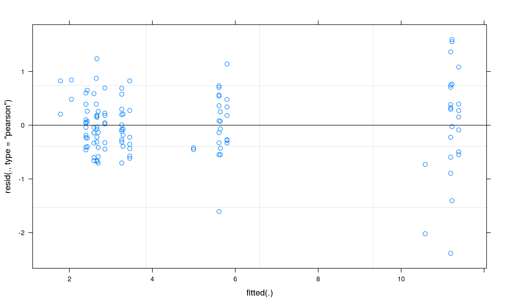

There is general interest in comparing the amount of genetic variation among different populations, usually measured as number of alleles, heterozygosity and/or allelic richness.
Genetic variability of populations of a species is important because it can be thought of an indirect measure of the evolvability of those populations. The greater the genetic diversity of a population the bigger the amount of genetic raw material upon which selection can act. A population deprived of its genetic variability is less likely to respond to environmental changes and more vulnerable to the negative effects of inbreeding. From a theoretical point of you measuring (correctly) genetic diversity of a population and comparing it among different naturally occurring or human driven treatments might be important to test the theoretical predictions on impact of drift on effect of population size of relatively isolated (small) populations and on mechanisms of genetic variance (diversity) maintenance. From the conservation point of view the relative genetic diversity of population differentially affected by human intervention might give insight into how resilient populations of a species are to rapid changes of the habitat in which they live. Particularly interesting are comparisons between mainland and island(s) natural and disturbed habitats, between urban and rural habitats. But it would also be desirable to correlate genetic diversity with the extent of isolation (distance from mainland, distance from next fragment), or with the size of islands or fragments.
Petit et al. (2005) were the first to emphasize the importance of controlling for the fact that microsatellite variation is dependent from the length of the microsatellite markers employed. They proposed the use of an ANCOVA framework when comparing genetic variation of microsatellite markers, with the mean number of repeats (MNR) included as covariate.
With an ANCOVA approach we use mean genetic diversity across population as covariate. If allelic richness is what is used as measurement of genetic diversity, mean allelic richness across population at each locus will be used as covariate. Highly variable markers will have a high mean allelic richness; less variable markers will be characterized by a smaller value of mean allelic richness. This allows to account for the portion of variability in the data due the fact that some microsatellite markers are more variable than other.
Here we suggest the use of linear mixed-effects models (LMMs) to control for the variability of microsatellite loci (random part of the mixed model) when comparing genetic diversity. This approach has less assumptions and is more statistically powerful than ANCOVA (Crawley 2007). In a LMM approach, we account for the portion of variance due to intrinsic differences in marker variability by introducing a level of grouping (modeled as locus), within which the chosen measurement of genetic diversity (allelic richness or heterozygosity) will vary around a group (locus) mean. The difference with an ANCOVA approach is that loci will be characterized, not only by their respective means across populations, but also by their respective variances around their respective means.
As an example we’ll use the comparison in Allelic Richness among populations of the orchid bee Euglossa dilemma in the Yucatan peninsula (Soro et al. submitted). Specifically we ask whether the magnitute of isolation could affect the genetic diversity of E. dilemma.The 24 sites where populations were sampled were assigned to 4 categories corresponding to different habitats:
We provide a data file (GenDivEuglossa.txt), where for each locality (population) under a certain habitat (fixed factor), Allelic Richness rarefied to a minimum sample size of 10 individuals (response variable), has been calculated at each locus (random factor). The data are stored in the file called GenDivEuglossa.txt.
Packages required:
Loading the required packages:
r.squaredGLMM() function to calculate conditional and marginal coefficient of determination.glht() function can be used for multiple comparisons in linear mixed effects models.library("lme4")
library("MuMIn")
library("multcomp")At first we need to load our dataset. We will import “GenDivEuglossa.txt”.
GenDivEuglossa <- read.delim("GenDivEuglossa.txt", header = TRUE)summary(GenDivEuglossa)## Locality Locus Habitat
## Bethania_N_Campeche : 5 ann04:24 C:25
## CampecheCity_C_Campeche : 5 ann08:24 D:50
## Cancun_C_Cancun : 5 ann24:24 I:10
## Cancun_D_Cancun : 5 ann28:24 N:35
## CancunInFrontIsland_D_Cancun : 5 Egc18:24
## CancunNaturalArea(ZonaAgricola)_N_Cancun: 5
## (Other) :90
## AllelicRichness
## Min. : 1.930
## 1st Qu.: 2.583
## Median : 3.225
## Mean : 5.037
## 3rd Qu.: 6.143
## Max. :12.820
## str(GenDivEuglossa)## 'data.frame': 120 obs. of 4 variables:
## $ Locality : Factor w/ 24 levels "Bethania_N_Campeche",..: 6 6 6 6 6 14 14 14 14 14 ...
## $ Locus : Factor w/ 5 levels "ann04","ann08",..: 5 4 3 1 2 5 4 3 1 2 ...
## $ Habitat : Factor w/ 4 levels "C","D","I","N": 4 4 4 4 4 4 4 4 4 4 ...
## $ AllelicRichness: num 5.98 3.04 4.28 1.93 12.47 ...Second, we build our model using the function lmer() from the lme4 package. With this command, we create a model with Allelic Richness as response with habitat and locus as fixed and random effects factors respectively. We modeled “habitat” as fixed because the four levels we chose (Natural, Disturbed, City and Island) correspond to four levels of progressive level of “isolation”, whose effect on the genetic diversity of E. dilemma, we are interested in. Locus is our random factor since we are only interested to account for its variation. Locus has bee modeled as random because the five markers we used are a random sample of the theoretically many markers we could have used.
Now lets look at the summary of our model. First we get several measures of model fit, including AIC, BIC, log likelihood and deviance. Then we get an estimate of the variance explained by the random effect (Locus). As you can see it is quite different from zero and thus important for our model. Next we have estimates of the fixed effects, with standard errors.
modelMANAG <- lmer(AllelicRichness ~ Habitat + (1 | Locus), GenDivEuglossa, REML = FALSE)
summary(modelMANAG)## Linear mixed model fit by maximum likelihood ['lmerMod']
## Formula: AllelicRichness ~ Habitat + (1 | Locus)
## Data: GenDivEuglossa
##
## AIC BIC logLik deviance df.resid
## 274.5 291.3 -131.3 262.5 114
##
## Scaled residuals:
## Min 1Q Median 3Q Max
## -3.7773 -0.5771 -0.0567 0.5471 2.5254
##
## Random effects:
## Groups Name Variance Std.Dev.
## Locus (Intercept) 10.8141 3.2885
## Residual 0.3985 0.6313
## Number of obs: 120, groups: Locus, 5
##
## Fixed effects:
## Estimate Std. Error t value
## (Intercept) 5.0564 1.4761 3.426
## HabitatD -0.0312 0.1546 -0.202
## HabitatI -0.6464 0.2362 -2.737
## HabitatN 0.1613 0.1653 0.976
##
## Correlation of Fixed Effects:
## (Intr) HabttD HabttI
## HabitatD -0.070
## HabitatI -0.046 0.436
## HabitatN -0.065 0.624 0.408Now, we check our model assumptions. We check for normality and homogeneity by inspecting the residual plot. This plot depicts fitted values on the x-axis and residuals on the y-axis.
plot(modelMANAG)
In order to test the effect of our fixed factor ‘Habitat’, we run a likelihood ratio test, comparing our model (modelMANAG), which includes the fixed factor “Habitat”, with a model (modelNULL) that excludes it.
modelMANAG<-lmer(AllelicRichness ~ Habitat + (1 | Locus), GenDivEuglossa, REML = FALSE)
modelNULL<-lmer(AllelicRichness ~ 1 + (1 | Locus), GenDivEuglossa, REML = FALSE)
anova(modelMANAG, modelNULL)## Data: GenDivEuglossa
## Models:
## modelNULL: AllelicRichness ~ 1 + (1 | Locus)
## modelMANAG: AllelicRichness ~ Habitat + (1 | Locus)
## Df AIC BIC logLik deviance Chisq Chi Df Pr(>Chisq)
## modelNULL 3 280.66 289.02 -137.33 274.66
## modelMANAG 6 274.55 291.27 -131.27 262.55 12.113 3 0.007005 **
## ---
## Signif. codes: 0 '***' 0.001 '**' 0.01 '*' 0.05 '.' 0.1 ' ' 1As a goodness of fit measure of our model, we computed both the conditional and marginal coefficient of determination. We quantify the variance accounted by “Habitat” alone (marginal R2 (Nakagawa and Schielzeth 2013)) and the variance accounted for by marker variability (conditional R2 (Nakagawa and Schielzeth 2013)).
r.squaredGLMM(modelMANAG)## R2m R2c
## 0.003800717 0.964593519Finally we test for differences in Allelic Richness among different habitat types by Tukey HSD post-hoc comparisons. From the results we see that E. dilemma is particularly resilient to loss of natural habitat and only on islands did E. dilemma show significantly reduced genetic diversity.
posthoc <- glht(modelMANAG, linfct = mcp(Habitat = "Tukey"))
summary(posthoc)##
## Simultaneous Tests for General Linear Hypotheses
##
## Multiple Comparisons of Means: Tukey Contrasts
##
##
## Fit: lmer(formula = AllelicRichness ~ Habitat + (1 | Locus), data = GenDivEuglossa,
## REML = FALSE)
##
## Linear Hypotheses:
## Estimate Std. Error z value Pr(>|z|)
## D - C == 0 -0.0312 0.1546 -0.202 0.99698
## I - C == 0 -0.6464 0.2362 -2.737 0.02995 *
## N - C == 0 0.1613 0.1653 0.976 0.75668
## I - D == 0 -0.6152 0.2187 -2.813 0.02426 *
## N - D == 0 0.1925 0.1391 1.384 0.50006
## N - I == 0 0.8077 0.2264 3.568 0.00211 **
## ---
## Signif. codes: 0 '***' 0.001 '**' 0.01 '*' 0.05 '.' 0.1 ' ' 1
## (Adjusted p values reported -- single-step method)LMM analyses showed that locality type had an effect on allelic richness in E. dilemma. The variance accounted for by locality type alone (marginal R2 of the fixed factor habitat (Nakagawa and Schielzeth 2013) was 0.3 %, while the variance accounted for by marker variability (conditional R2 (Nakagawa and Schielzeth 2013)) was 96.4%. This highlights how inherent inter-locus variability in genetic diversity could obscure any signal of genetic variability related to environmental variables unless inherent inter-locus variability is properly accounted for in analyses. The intensification of forest clearance on the Yucatan Peninsula and concomitant habitat fragmentation seem to have had little, if any, effect on neutral genetic diversity of E. dilemma, measured as allelic richness. Inhabiting an island, on the contrary, seemed to lower the allelic richness of E. dilemma.
This shows us useful information for reproducibility. Of particular importance are the versions of R and the packages used to create this workflow. It is considered good practice to record this information with every analysis.
options(width = 100)
devtools::session_info()## Session info ---------------------------------------------------------------------------------------## setting value
## version R version 3.3.2 (2016-10-31)
## system x86_64, linux-gnu
## ui X11
## language (EN)
## collate en_US.UTF-8
## tz <NA>
## date 2017-01-03## Packages -------------------------------------------------------------------------------------------## package * version date source
## backports 1.0.4 2016-10-24 CRAN (R 3.3.2)
## codetools 0.2-15 2016-10-05 CRAN (R 3.3.2)
## devtools 1.12.0 2016-12-05 CRAN (R 3.3.2)
## digest 0.6.10 2016-08-02 CRAN (R 3.3.2)
## evaluate 0.10 2016-10-11 CRAN (R 3.3.2)
## htmltools 0.3.5 2016-03-21 CRAN (R 3.3.2)
## knitr 1.15.1 2016-11-22 CRAN (R 3.3.2)
## lattice 0.20-34 2016-09-06 CRAN (R 3.3.2)
## lme4 * 1.1-12 2016-04-16 CRAN (R 3.3.2)
## magrittr 1.5 2014-11-22 CRAN (R 3.3.2)
## MASS * 7.3-45 2016-04-21 CRAN (R 3.3.2)
## Matrix * 1.2-7.1 2016-09-01 CRAN (R 3.3.2)
## memoise 1.0.0 2016-01-29 CRAN (R 3.3.2)
## minqa 1.2.4 2014-10-09 CRAN (R 3.3.2)
## multcomp * 1.4-6 2016-07-14 CRAN (R 3.3.2)
## MuMIn * 1.15.6 2016-01-07 CRAN (R 3.3.2)
## mvtnorm * 1.0-5 2016-02-02 CRAN (R 3.3.2)
## nlme 3.1-128 2016-05-10 CRAN (R 3.3.2)
## nloptr 1.0.4 2014-08-04 CRAN (R 3.3.2)
## Rcpp 0.12.8 2016-11-17 CRAN (R 3.3.2)
## rmarkdown 1.3 2016-12-21 CRAN (R 3.3.2)
## rprojroot 1.1 2016-10-29 CRAN (R 3.3.2)
## sandwich 2.3-4 2015-09-24 CRAN (R 3.3.2)
## stringi 1.1.2 2016-10-01 CRAN (R 3.3.2)
## stringr 1.1.0 2016-08-19 CRAN (R 3.3.2)
## survival * 2.40-1 2016-10-30 CRAN (R 3.3.2)
## TH.data * 1.0-7 2016-01-28 CRAN (R 3.3.2)
## withr 1.0.2 2016-06-20 CRAN (R 3.3.2)
## yaml 2.1.14 2016-11-12 CRAN (R 3.3.2)
## zoo 1.7-14 2016-12-19 CRAN (R 3.3.2)